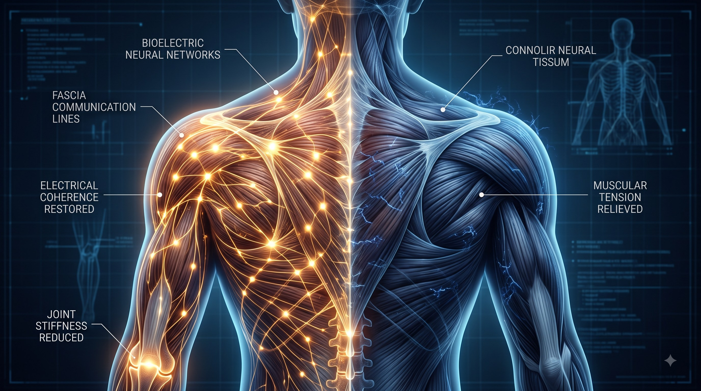

Begin Pain-Free Living
Recharge Your System and Leave Pain Behind
Consult with our bio-electric medicine specialists to experience personalized chronic pain protocols.
Reconstructing intercellular electrical pathways, normalizing tissue resistance, and resolving intractable chronic pain through structured bio-electric voltage restoration.
Chronic pain is fundamentally correlated with areas of diminished transmembrane voltage, increased electrical resistance, and disrupted intercellular communication.
Within Dr. Chang-Hyuk Park's NovaCell framework, clinical pain care begins with a comprehensive assessment of the body's electrical circuits—measuring voltage depletion, polarity reversal, distorted neural firing, and inflammatory stagnation.
By combining real-time adaptive microcurrent biofeedback, cranial-spinal polarity realignment, and progressive 3-phase protocols, NovaCell restores cellular communication at the root cause. This achieves profound, lasting relief rather than temporary symptomatic suppression.
The human body relies continuously on precise bio-electrical signals to coordinate repair, regulate inflammation, and transmit sensory feedback.

When transmembrane voltage falls below physiological thresholds (-50mV), cellular ATP production drops and tissue fluids turn acidic. Re-supplying restorative microcurrents and correcting polarity allows damaged fascia and nerves to break free from chronic spasm and ischemia.
NovaCell protocols specifically target the most challenging, persistent pain syndromes.
Chronic neck, back, disc herniation, and joint degeneration aggravated by fibrotic fascial adhesions and muscle guarding.
Sciatica, numbness, tingling, and chronic neuralgia resulting from damaged myelin sheaths and impaired axon conduction.
Surgical scars act as permanent electrical blockades that disrupt whole-body voltage; NovaCell safely neutralizes scar interference.
Widespread tender points and central sensitization linked to systemic cellular battery exhaustion and autonomic burnout.